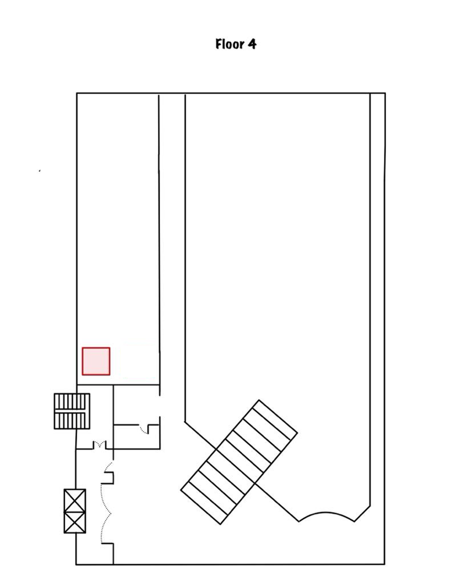
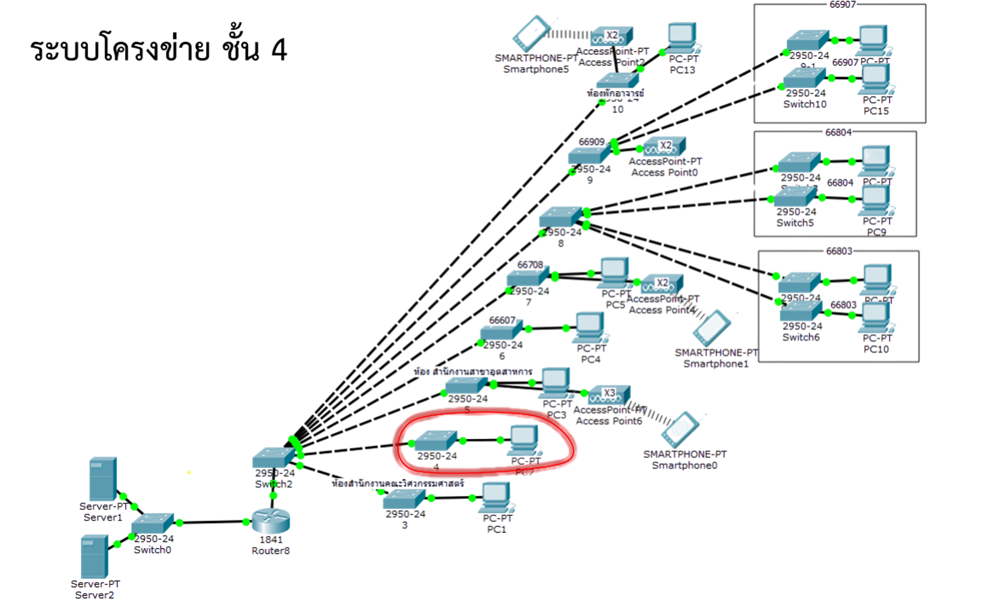

ตึกวิศวกรรมชั้นที่ 4
ห้องสํานักงานคณะวิศวกรรมศาสตร์

แผนผังชั้น 4 ประกอบด้วย:
1. ตู้ Rack จำนวน 1 ตู้

แผนภาพโครงข่าย
ชั้น 4: ชั้นเตรียมเชื่อมต่อเครือข่าย (Access Layer) ชั้นนี้การติดตั้ง Switch ไว้อย่างเดียวเพื่อเป็นจุดกระจายสัญญาณเครือข่ายสำหรับผู้ใช้งานภายในชั้นเรียนหรือห้องพักอาจารย์
หน้าที่หลัก: กระจายการเชื่อมต่อแบบใช้สาย (Wired Network) ให้กับคอมพิวเตอร์และอุปกรณ์ต่างๆ ภายในพื้นที่ชั้น 4 ที่อาจมีการติดตั้งใน ภายหลัง
อุปกรณ์สำคัญประกอบด้วย:
- Switch Cisco Catalyst 9200: 1 ตัว รับสัญญาณหลักมาจาก Core Switch ที่ชั้น 3 และกระจายการเชื่อมต่อไปยังจุดเชื่อมต่อ (Network Outlet) ทั้งหมดบนชั้นนี้
- Rack 9U: ใช้สำหรับติดตั้ง Switch ประจำชั้น